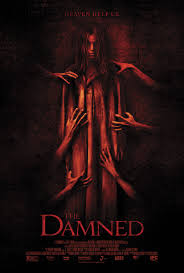

The Damned
Peter Facinelli (The Twilight Saga), Sophia Myles (Underworld) en Nathalia Ramos spelen de hoofdrollen in deze sfeervolle bovennatuurlijke thriller
Peter speelt David Reynolds, een weduwnaar die met zijn nieuwe verloofde naar Colombia reist om zijn rebelse tienerdochter op te halen. Als hun auto crasht bij een afgelegen landhuis, is dat de enige plek om onderdak te vragen.
Eenmaal binnen blijkt dat de oude beheerder een meisje in de kelder opgesloten houdt. Het besluit om haar vrij te laten heeft echter ernstige consequenties.